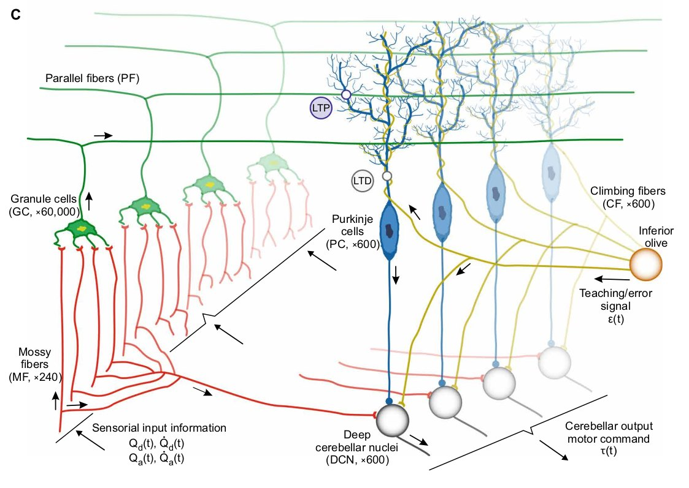
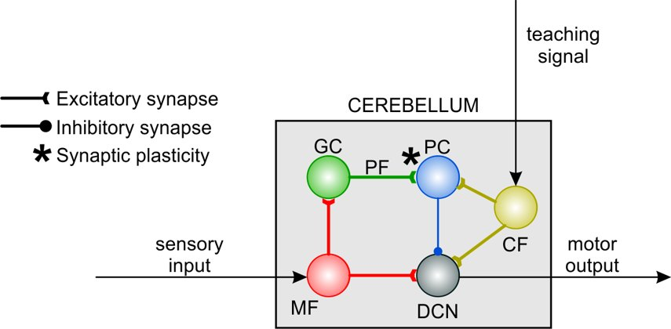
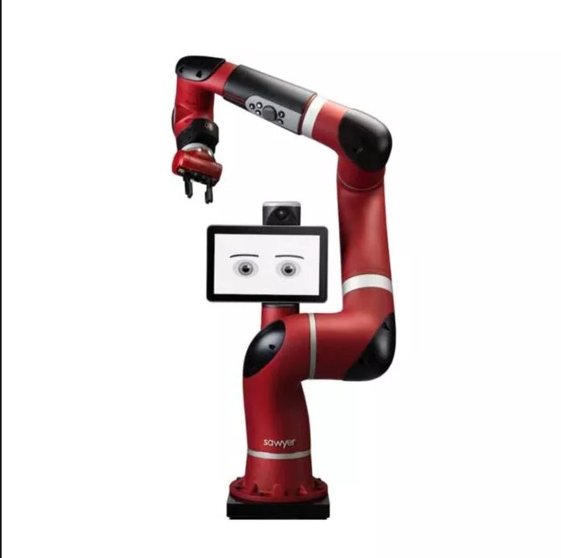
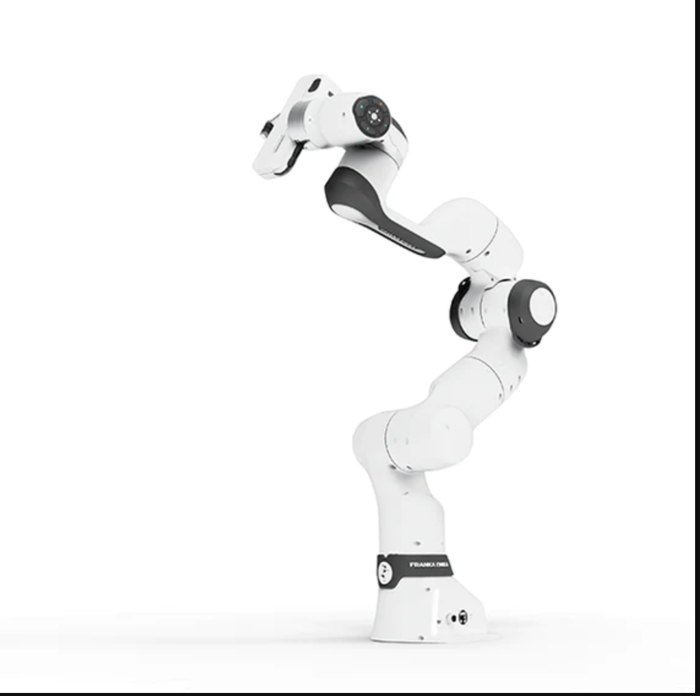
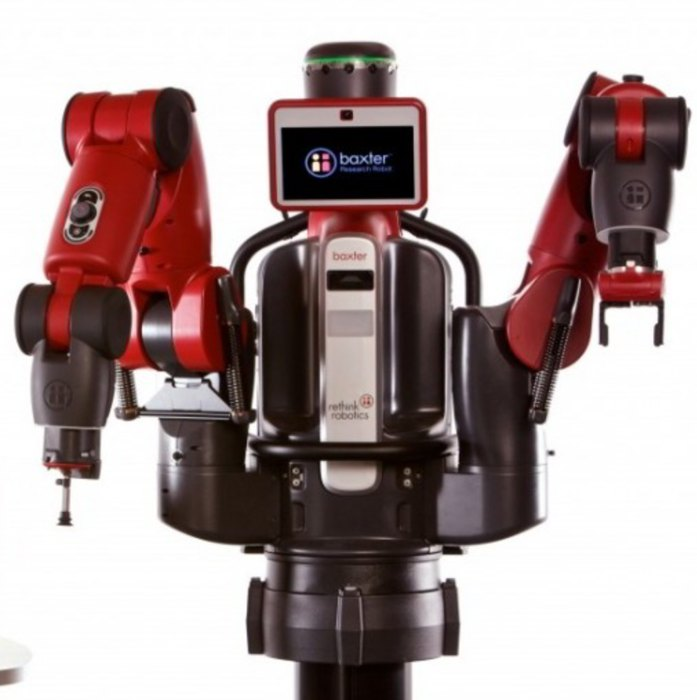
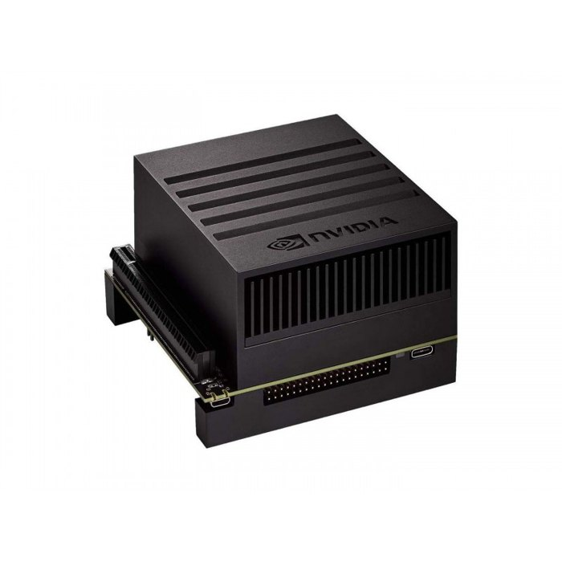

Project 1 · Neurorobotics
Cerebellar SNN: motor learning from simulation to real robots
An SNN cerebellum model that learns torque control in simulation, then finishes learning on real robots by switching a single ROS topic.
| Model | Spiking neural network (SNN) mirroring the cerebellar circuit, 70,000+ neurons |
| Output | Joint torque command, so real-time and safety constraints apply |
| Robots | Franka Research 3, Baxter, Sawyer |
| Compute | Desktop PC with GPU, Jetson Xavier, Jetson Orin |
| Control rate | PC 500 Hz · Jetson Orin 250 Hz · Jetson Xavier 100 Hz |
| Sim-to-real | ~450 trials (~30 min) in simulation, then ~80 trials on the real robot until the error converged |
| My role | Simulator bridge, Jetson port, torque-safety layer, real-robot experiments |
The idea: copy the cerebellum
The cerebellum plays a central role in motor coordination and in error-driven adaptation. Taking inspiration from its structure, I used a spiking neural network for motor learning. Its layers mirror the cerebellar circuit: mossy fibers, granule cells, Purkinje cells, climbing fibers and deep cerebellar nuclei.
The network learns when it receives two kinds of signals: sensory input and an error (teaching) signal. Learning is supervised: the network improves motion control by repeating a movement. The model contains more than 70,000 neurons, and its output is a torque signal. That single fact drives most of the engineering in this project: it has to run in real time, on a GPU, and with safety mechanisms.


One bridge between two simulators
A physics simulator such as Gazebo and a spiking-network simulator such as EDLUT cannot talk to each other natively. I worked with the Neurorobotics Platform (NRP), a ROS-compatible platform through which the two simulators communicate. Because it is compatible with ROS, moving to hardware only requires changing the ROS topic: the network keeps sending torques as before.
The clip shows the network controlling the simulated arm. After repeating a movement many times, for example a closed trajectory, the system performs it better. The plots at the top track position and velocity error to verify learning, and the plots at the bottom show the activations of some neuron layers.
Why simulate first
Simulation is the safest scenario. Early in learning, movements can be violent and would damage the real motors, through collisions, discontinuous signals or sudden changes in motor direction.
One neural controller, three robots, one embedded platform
The goal was a general solution, so I tested the neural controller using three collaborative robots (cobots) with different dynamics. All three have dynamics that are not completely rigid, because of some elastic components. Baxter, with its external springs, is the hardest to learn.




Because the output of the cerebellum is a torque signal, the work comes with four constraints:
- Real time at the highest frequency possible.
- GPU use and parallelization to run the SNN in real time.
- Safety mechanisms to operate in torque.
- An embedded target: I ran it on both a Jetson Xavier and a Jetson Orin.
Experimental setup
runs the SNN
- A separate PC is used only for plotting and monitoring, so it does not consume resources of the machine that runs the network.
- A Vicon camera system verifies the Cartesian position of the end effector, independently of the robot's own sensors.
- Every link goes through ROS topics, so simulation and hardware share one interface.
| Network host | Control frequency |
|---|---|
| Desktop PC | 500 Hz |
| Jetson Orin | 250 Hz |
| Jetson Xavier | 100 Hz |
Results on real hardware
The cerebellum running on the Jetson Xavier controls the Franka Research 3 along a circular trajectory. The trajectory is tracked in Cartesian space with Vicon as an independent ground truth, while the network runs in real time on embedded hardware.
The second clip is a typical run on Baxter, the hardest of the three: its external springs make it the most demanding dynamics to learn.
Sim-to-real: how the transfer works
- Learning starts in simulation, where erratic movements cannot damage anything.
- Once learning has stabilized, the network weights are saved to finish learning on the real robot. The trajectory lasts 4 seconds, so ~450 trials means saving the weights after about 30 minutes.
- Load the network on the real robot, changing only the ROS topic thanks to NRP. The movements are safer and learning can continue.
- After another ~80 trials the error converges, and network parameters offer further room to improve it.
Design choices and lessons
Design choices
- Jetson: network size and update rate adapted for real-time embedded inference.
- Joint-level learning, validated in Cartesian space with Vicon as an independent ground truth.
- Collaborative robots: a general, transferable controller that learns complex dynamics.
- Focus on the integrated pipeline: simulation, embedded GPU and real robots working together.
What I took from it
- Simulate first, then switch a single ROS topic: hardware risk drops sharply.
- Torque control needs a safety layer by design, not as an afterthought.
- Real-time GPU spiking inference is a systems problem as much as a modeling one.